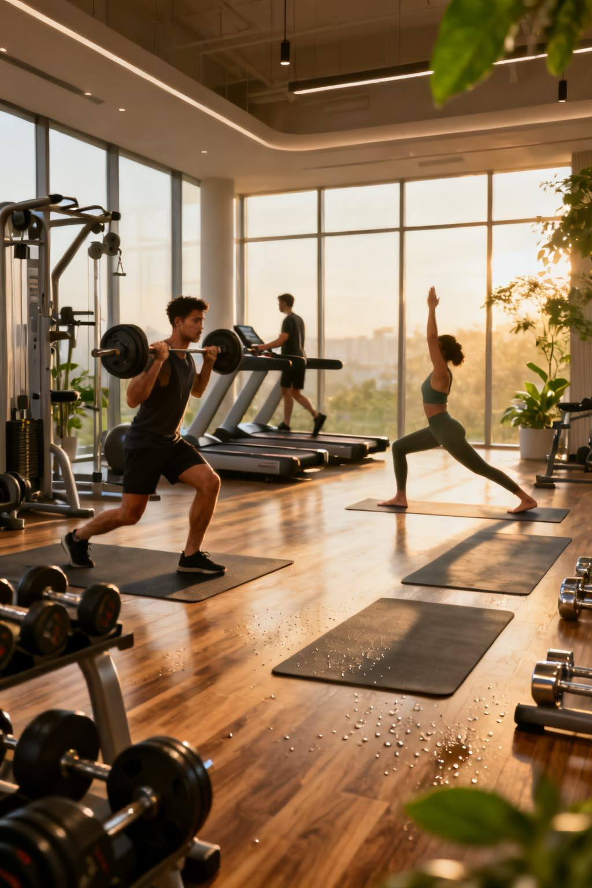

Сильнее.
Шаг за шагом.
Привет, меня зовут Даша. Я тренируюсь в DDX, веду дневник треноровок и учусь слышать своё тело. На этом сайте отображен мой путь, а также техника и маленькие победы.
Выбрать тренировку ↗Мой дневник → МОЁ МЕСТО СИЛЫ
МОЁ МЕСТО СИЛЫЗал помогает мне держаться на плаву
У каждой тренировки — своя задача.



О сайтеКак пользоваться блогом
Блог устроен просто. Раздел «Тренировки» помогает выбрать направление: низ тела, верх тела или лёгкий день. На страницах техники разобраны упражнения, видео и частые ошибки. В «Дневнике» собраны мои записи похода в зал, а также рабочие веса, а раздел «Клубы» помогает выбрать зал.
Если ты только начинаешь, пройди по порядку: тренировки, техника, восстановление. Если уже тренируешься, сразу открой дневник и сравни свои записи с примерами.
Все примеры основаны на моем личном опыте: это история занятий, а не готовое назначение для другого человека. Подбирай нагрузку под своё самочувствие, опыт и цели.
Материалы носят ознакомительный характер и не заменяют консультацию врача или тренера. При боли, головокружении или плохом самочувствии прекрати занятие.